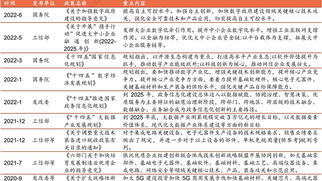
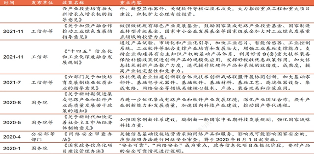
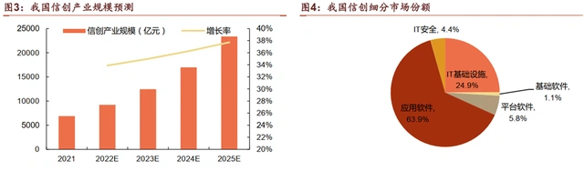
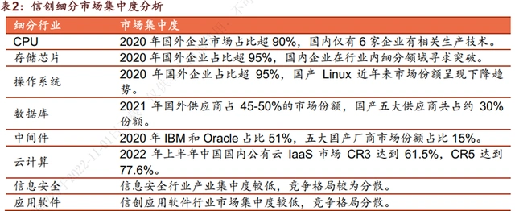

全面加速国产替代！信创迎来行业拐点
今年9月底国家下发79号文，全面指导国资信创产业发展和进度，要求到2027年央企国企100%完成信创替代，替换范围涵盖芯片、基础软件、操作系统、中间件等领域。政策规定所有企业在2022年11月份基于计划上报替换的系统，2023年每季度向国资委汇报。预计年末将有信创行业的大规模招标。
政策回顾：信创政策暖风频吹，科技自强上升国家战略。202年作为信创发展元年，国家连续颁布五项政策为信创产业发展提供顶层规划十四五期间，国家把科技自立自强作为国家发展的战略支撑，重点关注信创产业的自主研发和自主可控。
落地情况：形成“2+8+N”落地体系。党政走在信创落地最前列。八大行业中，金融和电信进展最快，能源、交通、航空航天，教育、医疗也在逐步进行政策推进和试点。最后，信创将在N个行业全面推广。
产业链：我国信创软硬件生态已初步建立。信创产业生态主要由底层硬件、基础软件、平台软件、应用软件、信息安全组成。
市场空间：预计25年信创产业规模突破2万亿。21年我国信创产业规模为6886.3亿元，随着国产替代进程的深入和应用场景的丰富，我们预计接下来五年信创市场进入高速发展期。
市场格局：参与者众多，不同细分行业市场集中度差异大。第三方调研数据显示，89%的软件企业都拥有或代理自主信创产品。目前我国CPU、存储芯片和操作系统领域市场基本被国外寡头垄断；
云计算领域国产化程度较高，呈现国产企业寡头竞争格局；信息安全和应用软件领域细分行业参与竞争企业较多，市场集中度相对较低。
一、新政要求落实“全替代”，信创发展进入关键期
政策要求到2027年央企国企100%完成信创替代，替换范围涵盖芯片、基础软件、操作系统、中间件等领域。今年9月底国家下发79号文，全面指导国资信创产业发展和进度，政策核心内容如下：
全面替换：OA、门户、邮箱、纪检、党建、档案管理
应替就替：战略决策、ERP、风控管理、CRM经营管理系统
能替就替：生产制造、研发系统
需要基于AK的CPU部署（飞腾、鲲鹏、兆芯、海光等）
政策明确量化要求，提振信创市场空间。新增79号文规定所有企业在2022年11月份基于计划上报替换的系统，2023年每季度向国资委汇报。预计年末将有信创行业的大规模招标，我们认为未来五年是信创发展的关键时期，发展空间广阔。
二、信创发展上升国家战略，打开万亿市场空间
信创政策暖风频吹，科技自强进入国家战略。
信创即信息技术应用创新产业，旨在实现信息技术领域的自主可控，保障国家信息安全。2020年作为信创发展元年，国家连续颁布五项政策为信创产业发展提供顶层规划，同年信创在经过多轮试点后进入规模化推广阶段。
十四五期间，国家把科技自立自强作为国家发展的战略支撑，重点关注信创产业的自主研发和自主可控。在国家层面政策的引领下，地方政府也相继出台支持性政策，助力信创产业持续发展。


应用领域方面，党政先行，形成“2+8+N”落地体系。
党政走在信创落地最前列，2020年上半年完成三期试点，现已进入规模化推广。截至2021年末，党政信创落地实践率达到57.01%。
八大行业中，金融和交通进展最快，落地实践率分别为29.55%和19.10%。能源、电信、航空航天、教育、医疗也在逐步进行政策推进和试点。最后，信创将在N个行业全面推广
预计2025年信创产业规模突破2万亿，2021年应用软件市场份额超60%。21年我国信创产业规模为6886.3亿元，随着国产替代进程的深入和应用场景的扩大，根据海比研究院报告，接下来五年信创市场进入高速发展期，25年市场规模突破2万亿。
从各个细分市场来看，21年应用软件市场份额最大，占比63.9%，其次是IT基础设施，平台软件、IT安全和基础软件份额相对较小。

三、我国信创产业生态初步建立，云服务和数据库技术领先
我国信创软硬件生态已初步建立。信创产业生态主要由底层硬件、基础软件、平台软件、应用软件、信息安全组成。
基础硬件：硬件领域分为底层硬件和基础设施，其中底层硬件包括芯片、固件等，基础设施包括存储设备、整机和通讯设施等。
基础软件：基础软件的主要作用是为应用软件对系统资源、数据和网络资源的访问和管理提供支撑，为应用软件的开发、部署和运行提供平台，包括操作系统、中间件和数据库。
平台软件：包括云平台（IaaS、PaaS、SaaS）和低代码平台等。由于平台软件在国外开源软件的使用方面非常深入，导致较难实现自主可控。
应用软件：应用软件是信创需求方会较早采购的项目之一，其与国产基础软硬件的适配性是客户考量的重点。
信息安全：信息安全是为数据处理系统建立和采取的技术和管理的安全保护，分为安全硬件、安全软件、安全服务和云安全等。
从技术成熟度来看，我国的云服务、数据库和网络设施领先全球，基础软硬件有待进一步成熟。在信创生态的各个环节，我国的技术成熟度均低于全球水平，其中基础设施和信息安全与全球差距较小，基础软硬件的技术能力则亟待提升。
从各个细分领域来看，我国目前在IaaS、芯片、低代码、PaaS、中间件等方面技术成熟度较低，仍需要加大发展力度。网络设施、安全硬件、云服务平台、办公套件、安全软件等方面技术成熟度已经较高，具有一定技术优势。
四、信创领域参与者众多，不同细分行业市场集中度差异较大
信创领域参与者众多，厂商自主知识产权仍有较大提升空间。在政策的大力扶持下，信创领域对于国内厂商是一个广阔的增量市场。
海比研究院调研数据显示，89%的软件企业都拥有或代理自主信创产品。信创厂商的平均自主知识产权覆盖率为29%，说明厂商自主知识产权仍需进一步提升。在自主知识产权方面具有优势的企业，会在信创领域有更好的发展前景。
信创产业不同细分行业市场集中度差异较大。其中CPU、存储芯片和操作系统领域市场基本处于国外企业寡头竞争格局，市场集中度较高。
云计算领域国产化程度较高，呈现国产企业寡头竞争格局；数据库和中间件领域市场集中度中等偏高；信息安全和应用软件领域细分行业参与竞争企业较多，市场集中度相对较低。

信创领域主要有三种商业模式。其中：
平台商→集成商→用户的方案模式具有较高的利润空间
厂商→渠道→用户的产品模式的盈利能力次之
用户→厂商的定向模式盈利水平最低